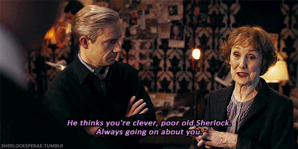
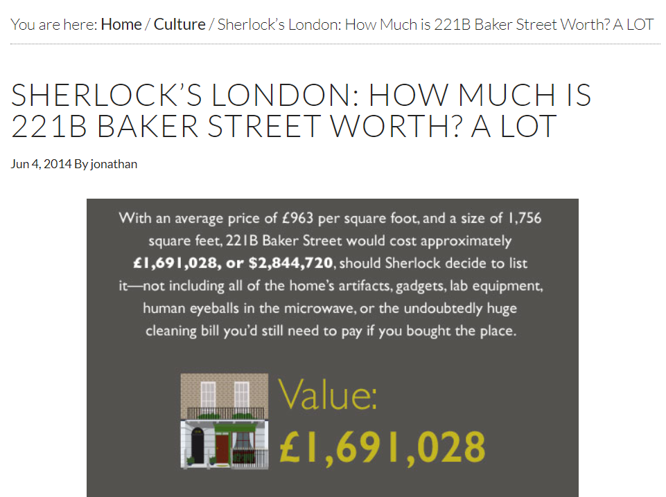
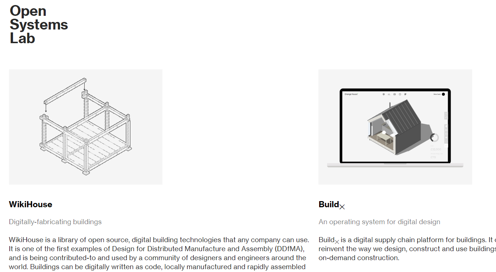
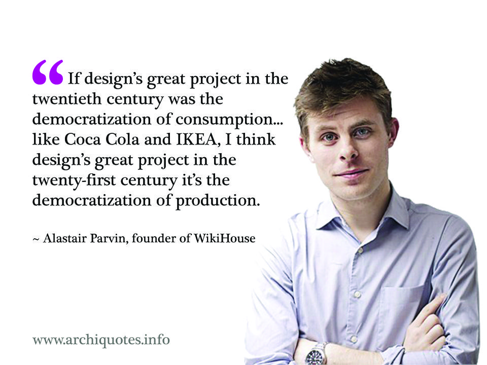
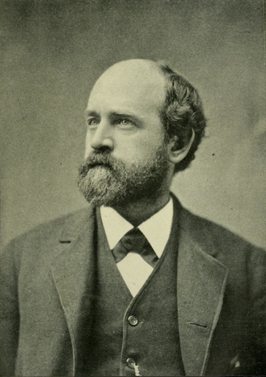
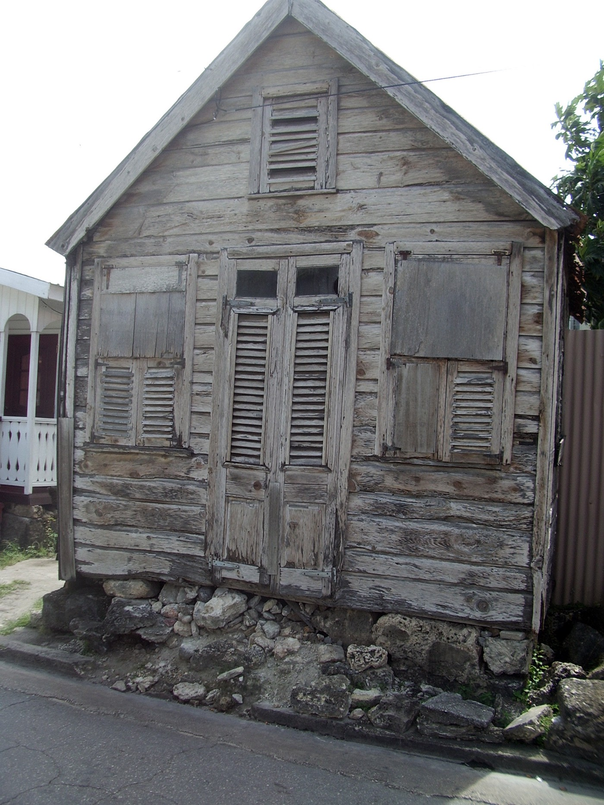
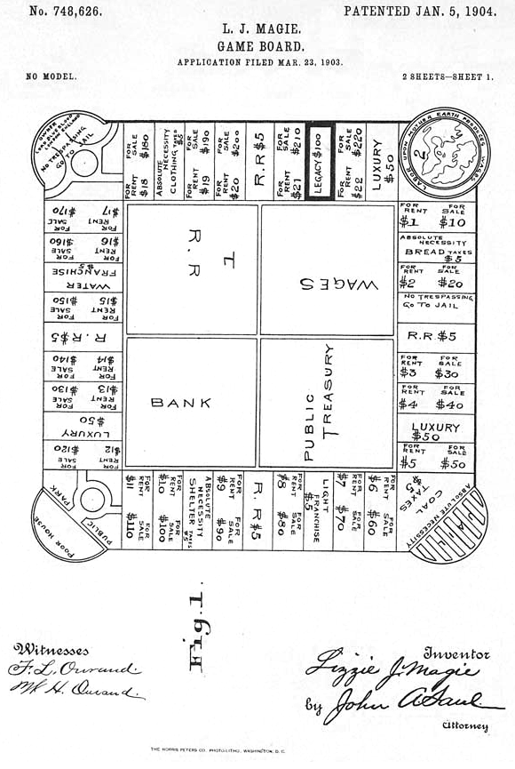
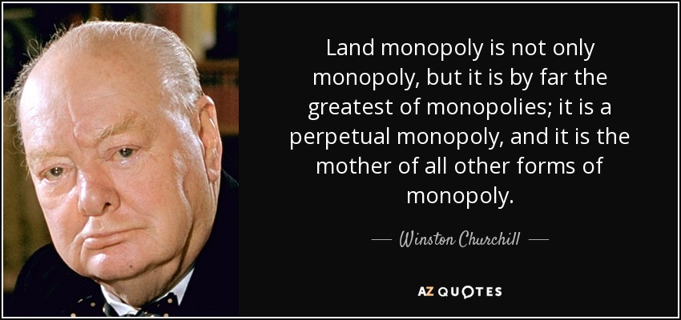

"토지 사유제는 희석된 노예제이다 !"
게시: 2020-07-13T06:30:04+09:00
유명 영드인 컴버배치 주연의 '셜록'의 어떤 한 에피소드에서, 셜록과 왓슨이 어느 집을 나서자마자 람보르기니 같은 고급 스포츠카 한 대가 드리프트를 하며 그들 앞에 급정거를 했습니다. 내리는 인물을 보니 놀랍게도 그들의 하숙집 여주인인 허드슨 부인이었습니다. 왓슨이 놀라기도 하고 궁금하기도 해서 '여기서 뭐하시는거냐, 이 스포츠카는 대체 누구 차를 빌린거냐'를 묻자 허드슨 부인이 자기 차라고 말하며 자존심 상했다는 듯이 이렇게 덧붙였습니다. "I own property in Central London !" (나 런던 중심가에 부동산을 소유한 몸이라구 !) 생각해보면 맞는 말입니다. 서울 시내에 20평대 아파트 1채만 있어도 10억대 부자, 그러니까 글자 그대로 백만불이 넘는 재산을 보유한 백만장자입니다. 하물며 런던 중심가인 베이커 스트리트 221B 번지에 깔끔하고 꽤 넓은 주택을 소유한 허드슨 부인은 최소 30억대 부자입니다. 30억대의 재산을 가진 할머니가 고급 스포츠카 모는 것이 뭐 이상할 것 없습니다.
 
(실제로 'how much is 221B Baker Street worth?' 라는 질문 코너가 있습니다. 저기서는 미화로 280만불 정도로 산정하는데, 그나마 저거 2014년 가격이니 지금은 아마 우리 돈으로 50억대 하지 않을까 합니다. Source는 londontopia.net/londonism/property/sherlocks-london-much-221b-baker-street-worth-lot 입니다.)
오늘 글은 영국의 토지 주택 문제와 관련이 있는데, 일단 제 글이 아니라 Medium이라는 인터넷 매체에 실린 Alastair Parvin 이라는 사람이 쓴 '토지 문제'에 대한 글입니다. 다만 이 사람의 글을 100% 그대로 번역한 것은 아니고 (원문은 다소 장황하고 꽤 긴데다, 무엇보다 원문에서 제시하는 대안은 제가 보기엔 매우 비현실적입니다) 제가 인상 깊게 읽은 부분만 발췌 번역했습니다. 제 잡설과 구분하셔서 읽으시도록 발췌 번역한 부분은 따로 굵은 폰트로 표시를 했습니다. 전체 원문을 읽으시고 싶으신 분은 아래의 링크를 읽으시면 됩니다.
medium.com/@AlastairParvin/a-new-land-contract-684c3ba1f1b3
원제가 'A New Land Contract' (새로운 토지 계약)인 이 글은 영국의 주택 문제를 지적하며 대안을 제시하는 글인데, 이 글을 쓴 Alastair Parvin라는 사람은 '오픈 시스템즈 랩' (Open Systems Lab) 이라는 비영리 연구기관의 공동 창립자입니다. 홈페이지를 들어가보면 그냥 사회에 불만이 많은 문돌이들의 모임이 아니라 실질적인 프로젝트를 여러건 추진하고 있는 단체인가봐요.

(홈페이지는 www.opensystemslab.io 입니다.)

(이 글을 쓴 Parvin은 WikiHouse도 만들었군요.)
영국은 자타가 공인하는 선진국입니다만, 그럼에도 불구하고 영국도 빈곤 문제가 심각하고 특히 주택 문제가 심각한 모양입니다. 그리고 그 중심에는 토지 소유권에 대한 문제가 있으며, 이를 새로운 토지 공유제 등으로 바꾸지 않으면 안된다는 것이 이 글의 주요 내용입니다. ---------------------------- (전략) 5가구 중 1가구, 그리고 3명의 어린이 중 1명은 빈곤 속에 살아간다. 수백만의 부모들이 (코로나-19로 인한) 락다운 기간 중에 아이들 먹일 음식 살 돈을 구하지 못했다. 이 모든 일이 세계적으로 가장 부유하고 기술적으로 가장 진보된 사회에서 일어난 일이다. (중략) 코로나-19의 도래 이전부터 영국은 오르지 않는 생산성, 역대급으로 낮은 투자 수준, 역대급으로 높은 수준의 부채 문제를 겪고 있었다. 중소기업들의 부진, 런던에만 집중되고 남북으로 갈라진 경제구조, 중심가의 몰락, 제조업의 아웃소싱, 시대에 뒤떨어진 건설업, 숙련된 인력의 부족, 조각조각 단편화된 공급망 등등. 이런 것들은 이미 새로운 문제가 아니다. 그러나 여태까지는 숨겨져 있었지만 (코로나-19로 인해) 매우 극명하게 드러난 구조적 문제가 있다. 그리고 그건 주거비 문제와 상관이 있다. 우리가 이미 잘 알다시피, 영국은 이미 심각한 주택 위기를 겪고 있었고 주거비는 1970년대 이후로 5000% 치솟아서 임금 상승률을 크게 따돌렸다. 이제 한 세대 전체가 - 그리고 영국 전체 가정의 절반 이상이 - 내집 마련의 기회를 사실상 잃어버렸다. 락다운의 첫째주에, 재무부가 '필요한 것은 어떠한 것이든 하겠다'라고 선언했을 때 그들이 당면한 도전은 근본적으로 전체 경제에 대해 '멈춤(pause)' 버튼을 누르는 것이었다. 즉 모든 것에 대해 얼음땡을 외치는 것이었다. 그리고 가정에게나 기업에게나 기본적인 생존 원칙은 동일했다. 수입이 동결되니까, 살아남으려면 지출도 동결해야 했다. 그리고 대부분의 가정에 있어 매달 지출해야 하는 가장 큰 단일 비용은 바로 주거비이다. 주택담보대출을 통해 이미 내 집을 소유한 사람들에게는 이것이 쉽다. 필요한 경우 주택담보대출 상환 중지를 요청하도록 해주면 된다. 그 조치를 통해서 실제로 손해를 보는 사람은 없다. 기본적으로는 그냥 멈춤 버튼일 뿐이고, 주택담보대출 상환 기간이 더 늘어날 뿐이다. 하지만 정부가 멈춤 버튼을 누를 수 없는 주거 형태도 있다. 월세(rent)다. 전체 경제가 락다운에 들어가도, 월세 내는 날은 꼬박꼬박 돌아온다. 그 결과 우리는 굉장히 이상한 상황에 빠지게 되었다. 납세자로서 우리는 경제 회생에 수십억 파운드의 지원금을 부담하고 있는데, 그 중 상당 부분이 집주인들 호주머니로 고스란히 빨려들어가고 있는 것이다. 경제를 양동이에 비유하자면 그 양동이 바닥에 커다란 구멍이 나있는 셈이다. 실은 바닥이 아니라 꼭대기다. 그래서 필연적으로 수백만의 젊은이들이 여태까지 바로 우리 코 앞에 항상 놓여있던 문제에 대해 질문하기 시작했다. "잠깐, 우리가 집주인에게 뭘 해달라고 돈을 내는 거야?" 기본적인 답은 이거다. "아무 것도 없어. 우리가 그들에게 해달라고 하는 것은... 그저 우릴 내쫓지 말아달라는 거야." 그거 굉장한 현실 자각 아닌가? 공정함과 노력, 기업 정신과 혁신, 능력주의를 굳게 믿는 나라에서 대부분의 가정과 기업에 있어 가장 큰 비용 부담이라는 것이, 가난한 자들이 부자들에게 아무 것도 하지 않는 것에 대한 대가로 내는 요금이라니. 그저 집주인들이 애초에 돈을 좀 가지고 있었다는 것에 대한 보상으로 말이다. 게다가 그 요금은 오르고 또 올랐다. 계속. 우리의 주택 위기는 실은 우리의 토지 제도의 문제이다. 하늘 높은 줄 모르고 치솟는 주거 비용에 대해 이야기할 때 우리는 '주택 위기'라고 말한다. 그러나 진실은 주택 위기가 아니라 토지 문제이다. 주택 위기는 토지 문제의 여러 증상 중 하나일 뿐이다. (중략) 내가 언급한 모든 체제 위기와 구조적 취약성, 그러니까 사회적 회복력, 보건, 기후, 경제, 민주주의 등은 모두 복잡하게 서로 얽혀있다. 그러나 핵심은 이것이다. 그것들 모두의 뿌리는 토지 제도에 있다. 나는 그 토지 제도를 새롭게 설계하는 것이 21세기의 가장 중요한 개혁 프로젝트라고 믿는다. (중략) 그래서 당신에게 남겨진 것은 사회적인 권력 관계, 즉 강요된 종속과 통제 체제이다. 경제학자 헨리 조지(Henry George, 토지공개념의 창시자로 유명)가 지적하듯이, 이건 본질적으로 희석된 형태의 노예제이다.

"땅을 소유하는 것은 사람을 소유하는 것이다. 탈출할 수 없는 섬에 100명을 몰아 넣고 그 중 하나를 나머지 99명에 대한 독재권자로 만들거나, 아니면 그냥 그 섬 전체의 소유주로 만들어보라. 결과는 똑같을 것이다." 백 몇십년 전으로 돌아가서 남북전쟁 직후의 미국 상황을 보면 이 말의 의미를 알 수 있다. 농장주들은 더 이상 노예를 소유하지 못했지만, 그냥 그들은 해방 노예들에게 이렇게 말했다. "OK, 임금을 줄게, 음, 하루에 2딸라. 근데 말이야, 내가 땅 주인이거든. 월세가... 하루에 2딸라야." 이런 일 때문에 부수적으로 '동산 가옥'(chattel house)라는 영리한 발명품을 만들어냈다. 이건 일종의 이동식 조립 주택으로서 농장 노동자들이 착취하는 농장주로부터 가족들을 쉽게 이주시킬 수 있게 해주었다.

(역주 : 채틀 하우스입니다. Chattel은 부동산의 반대말인 동산을 뜻합니다. 카리브해 바베이도스에서 많이 만들어졌다고 하는데, 못을 쓰지 않고 조립식으로 지었다 헐었다 할 수 있게 만들었다고 합니다.) (중략) 블루마블(영어 이름은 monopoly, 즉 독점권이라는 뜻) 게임은 엘리자베스 매기(Elizabeth Magie)라는 여자가 발명한 것이고 원래 이름은 '지주들의 게임'(The Landlords Game)이었다. 그런 게임을 만든 목적 자체가 토지 체제의 불공정성에 대해 알려주기 위해서였다.

(나중에 블루마블, 즉 Monopoly로 이름을 바꾸게 되는 게임 The Landlords Game의 특허출원에 딸린 그림) 그러니까, 넓게 말해서 - 여기서는 굉장히 단순화하겠다 - 이 권력 구조에는 2가지 위치가 있다. 세입자(tenant)와 땅주인(landlord)이다. 세월이 흐르면서 땅문서는 거래 대상인 자산이자 상속받을 수 있는 물건이 되었다. 즉 당신은 사람들로부터 너만의 세금을 걷을 수 있는 권리를 글자 그대로 살 수 있게 된 것이다. 그걸 이상하게 생각하지 않는 다는 사실이 내게는 무척이나 놀랍다. 땅주인(landlord)라는 단어 자체에 그 뜻이 그대로 드러나 있지 않은가? 하지만 그런 상위층/하위층의 극단적인 구조는 정치적으로 유지되기가 어렵다. 그래서 세월이 흐르면서 우리는 중간층이 서서히 형성되는 것을 보게 되었다. 그 중간층이란 월세라는 세금을 내지 않아도 되는 자유를 살 만큼의 돈을 모은 사람들이다. 또 영어 단어 이야기가 나오는데, 그래서 토지 보유권이라는 단어가 'freehold' 인 것이다. 여기서 free란 공짜라는 뜻이 아니라 글자 그대로 '자유'를 뜻하는 것이다. (중략) 기억하라. 당신이 내는 월세는 그 땅을 생산하는데 들어간 비용에 의해 정해지는 것이 아니다. 땅은 원래부터 그냥 거기 있던 거다. 소유권이란 그냥 종리쪼가리일 뿐이다. 땅을 생산하는데는 비용이 들어가지 않는다. 월세는 그 땅을 사용하는데 누가 얼마만큼 내느냐에 달려있다. 그것이 아담 스미스와 데이빗 리카르도가 정리한 '지대론'(Law of Rent)이다. 그러니까 상거래나 기업 활동을 통해서 지역 사회가 더 부유해지거나 또는 돈 많은 사람들이 외부에서 유입해오면, 월세는 올라간다. 하지만 그래도 최소한 그건 선형으로 비례하는 체제여야 하는 것 아닌가? 길 위의 여행자들이 돈이 많아진다면, 노상강도들도 부자가 되는 것과 마찬가지이다. 하지만 이런 경제적 자유에 대한 갈망은 부채 시장에 대한 수요도 창출하게 되었다. 사람들이 월세로부터 탈출하려고 필사적으로 노력하다 보니 가능한 최대로 돈을 빌려서라도 자유를 사려고 하는 것이다. 1970년대부터 (세계 금융위기가 있던) 2008년까지 일어났던 일은, 각국 정부들이 사유 주택담보대출 기관들에 대한 규제를 풀어준 것이었다. 즉 그들이 더 낮은 이자로 더 많은 빚을 내도록 허락해준 것이다. 당연히, 사람들이 더 많이 빚을 낼 수록 땅값은 올라갔다. 그리고 땅값이 올라갔으니 그걸 담보로 하는 주택담보대출 기관들은 더 많은 빚을 내줄 수 있었다. 그렇게 하다보니 이렇게 꼬리에 꼬리를 물고 이어지는 미친 듯한 땅값 상승과 빚 창출이 이루어진 것이었다. 영화 '빅 쇼트'를 보았다면 이 이야기를 잘 알 것이다. 그러더니 2008년에 모든 것이 무너져 내렸다. 하지만 2008년 이후에도, 그 금융위기를 질서있는 연착륙으로 유도하는 대신 영국 정부는 기본적으로 버블을 다시 부풀리는데 힘을 기울였다. 그건 마치 영국 전체 대고 이런 대량 광고를 뿌린 것이나 다름없었다. "세계의 부자 여러분! 실제로 생산적인 사업이나 쓸모있는 혁신에 투자하지 마시고 그냥 영국의 땅을 사세요! 공짜로 돈을 버는 거나 다름없어요! 위험에 대한 보증은 우리가 할게요! 보너스로 우리 국민에게서 월세도 받게 해드립니다!" 그래서 이후 우리는 땅값의 무지막지한 상승을 보게 된 것이고, 자가 소유율은 꾸준히 떨어지게 된 것이다. 아마도 이번에도 똑같은 일이 발생하는 것을 보게 될 것이다. (이야기가 옆으로 새지만, 이런 일을 하고도 정부가 애국적인 일을 한다고 주장하며 무사히 빠져나가는 것을 보면 참 놀랍다.) 이 모든 것이 우리의 현재 모습으로 상황을 끌고 왔다. 올해 초에 영국 전체의 부동산 가치, 그러니까 토지로부터 사적인 세금을 걷을 권리인 종이쪼가리들의 가치는 8.6조 파운드에 달했다. 영국 전체 국부의 83%에 달하는 액수이다. 전세계적으로 그런 권리의 가치는 약 280조 파운드이다. 그와 비교를 하자면, 전세계에 여태까지 채굴된 모든 금의 가치는 겨우 7조 파운드에 불과하고, 실리콘 밸리 기업들이 가진 전체 데이터의 가치도 3조 파운드에 불과하다. 우리는 이걸 '부'의 한 형태라고들 하지만, 실제로는 물론 그렇지 않다. 그건 일종의 사적인 세금이다. 그리고 이 사적인 세금은 모든 사회경제적 활동에 다 부과된다. 작년에 영국에서 우리 국민이 낸 월세는 710억 파운드이고 주택담보대출 상환에 쓴 돈은 670억 파운드이다. 그 정도면 영국 건강보험(NHS)를 하나 더 운영해도 될 금액이다. 그 모든 금액을 사회와 경제로 환원시킨다면 그걸로 무엇을 할 수 있을지 생각해보라. 아니, 그 금액을 사회와 경제에 그냥 그대로 두었을 경우를 생각해보라. 그런 비용은 결국 긴급 주거자금이나 주택 복지의 형태로 납세자의 부담으로 이어진다. 작년 주택복지 비용만 해도 230억 파운드에 달했다. 그 금액은 우리가 고속도로와 경찰, 군 장비에 쓴 모든 예산을 다 합친 것보다 더 큰 금액이다. 그 금액이 땅주인으로부터 우리의 땅을 빌려 쓰기 위한 비용인 것이다. 결국 모든 것은 땅 문제로 귀결된다. 아주 간단히 이야기해서, 토지 빌리는데 더 많은 돈을 써야 할 수록 그 위에 건물을 짓고 경제 활동을 하는데 쓸 돈은 줄어든다. 토지 비용은 모든 것에 붙는 세금이다. 사람의 사업과 발전의 모든 형태에 이 세금이 붙는다. 그러니까 진실은 우리의 기존 토지 체계는 우리를 부유하게 만드는 것이 아니다. 오히려 글자 그대로 우리를 가난하게 만든다. 이건 일부러 만들어내는 빈곤이다. 이 시점에서 당신은 상식적인 질문을 할 것이다. "잠깐만요, 만약 이런 토지 독점권이 그렇게 비싸다면 그 이유는 그게 희귀하기 때문일 거에요. 하지만 아직 미개발 상태의 토지는 아주 많은데요. 그러니 그냥 토지 권리를 더 많이 만들어내면 되는 거 아닌가요? 도시계획을 이용해서 그린벨트를 해제하자구요. 문제 해결 되었네요, 맞지요?" 글쎄, 그렇지 않다. (중략) 우리가 돈을 내는 것은 실제로는 땅의 가치에 대해서 아니라 위치에 대한 가치이다. 사회 인프라와 일자리, 학교, 기차역, 문화 시설, 지역 기반 시설과 녹지, 매력적인 사람들이 많이 사는 고급 동네, 또는 바다가 보이는 경치 등에 대한 접근성에 돈을 내는 것이다. 내가 만약 당신에게, 시베리아 북부에 내가 땅을 아주 많이 가지고 있는데 인프라가 전혀 없어서 거기 가는데 5일이 걸리고 산적이 횡행하는데 경찰은 없다고 말하면, 그 땅을 사는데 당신은 얼마를 쓰겠는가? 당신은 "고맙지만 통과"라고 할 것이다. 그 경제적 가치는 0이다. 하지만 만약 내가 당신에게 켄싱턴에 있는 똑같은 크기의 땅을 주겠다고 하면 당신은 아마 로또에 맞은 기분일 것이다. 이 주제에 대해 행해진 연설 중 가장 뛰어난 것은 1909년에 있었는데, 그 제목은 '모든 독점권의 근원'(The Mother of All Monopolies)이라는 것이었다. "도로가 닦이고 거리가 만들어지고, 서비스는 개선되며, 전기불은 밤을 낮으로 만들어주며, 물은 수백 마일 떨어진 산 속의 저수지에서 끌어옵니다. 그리고 이 모든 활동이 이루어지는 동안 땅주인이 하는 일은 그냥 가만히 앉아 있는 것 뿐입니다." "이런 모든 개선 횔동에 대해 토지 독점권 보유자는 아무 것도 기여하지 않습니다. 하지만 그 모든 개선 활동 하나하나가 그의 토지 가치를 끌어올립니다. 땅주인은 지역 사회에 아무런 일을 하지 않고 대중 복지에도 아무런 기여를 하지 않으며, 자기 자신의 부가 창출되는 그런 과정에 대해 아무런 보탬이 되지 않습니다." 그건 그렇고, 이 연설을 한 사람은 바로 윈스턴 처칠이다. 난 이 연설이 그의 인성을 대표하는 것이라고 하진 않겠다. (중략) 내가 여기서 말하고자 하는 바는 이 문제가 좌익이나 우익이냐의 문제가 아니라는 것이다. 이건 그보다 훨씬 더 심층적인 문제이다.
흥미로운 곁가지 이야기지만, 이 연설을 한 직후 그와 애스퀴스(Asquith)는 과격한 토지 개혁 법안을 하원에서 성공적으로 통과시켰다. 놀라운 일은 아니지만 그 법안은 상원에서 부결되었다.

하지만 그 연설에서 처칠이 말하고자 했던 요지는 정말 중요하며 또한 시대를 관통하는 것이다. 똑같은 취지의 이야기는 아담 스미스도 했고 그 이전의 많은 사람들이 했다. 토지의 가치는 그 땅주인에 의해 창조되는 것이 아니라, 납세자에 의해 창조된다. 인프라에 투자되는 세금과, 지역 사회의 경제 활동, 그리고 개발에 대한 우리의 집합적 합의에 의해 토지의 가치가 창출되는 것이다. 그럼에도 불구하고 우리의 현행 토지 제도는 그런 공공의 가치를 사적으로 약취하여 독점권을 행사하도록 허용한다. 월세를 받는 집주인만 그러는 것이 아니다. 자가 소유자(freeholders)도 마찬가지이다. 예를 들어, 교육기준청(OFSTED, the Office for Standards in Education)이 '매우 우수'라고 평가한 공립 학교가 근처에 있다면 그 주택의 가치는 4만에서 10만 파운드 정도 상승한다. 그럼에도 우리는 흔히 영국의 공공학교에는 학비가 없다고 말한다. 그렇게 말하고는 빈곤 지역 아이들은 왜 동등한 기회를 얻지 못하는 것일까 의아해 한다. (중략) 토지의 가치 상승분을 그 토지 소유자가 약취하도록 허락함으로써, 근본적으로 우리는 수십억 달러에 달하는 토지 투기 시장을 창조해낸 것이다. 이건 인기 콘서트의 암표상과 본질적으로 동일한 비즈니스 모델이다. (중략) 그리고 오해하지 말았으면 하는 것이, 이런 모든 해악은 땅주인과 투기성 택지 개발업자들이 악의에 가득찬 나쁜 사람들이기 때문에 벌어지는 것이 아니라는 점이다. 그런 사람들의 대부분은 착하고 점잖은 사람들이다. 나도 전에 땅주인이었던 적이 있었고, 난 내가 상식적으로 점잖은 사람이길 바란다! 이건 누구를 벌 주자는 것이 아니라, 우리 자신을 재활시키자는 것이다. 우리가 모두 묶여버린 이 게임의 잘못된 점을 고치자는 것이다. 그러지 않으면 이 게임은 우리를 절벽으로 몰아가기 때문이다. 토지 독점권이 우리의 경제와 사회, 환경과 기후와 민주주의를 갉아먹고 있는데, 많은 사람들은 그 실체를 인지하지 못한다. 이 토지 체계에 대해 가장 놀라운 점은 아무도, 좌익이건 우익이건 아무도 이런 시스템이 존속해야 하는 경제적 또는 도덕적인 정당성을 대지 못한다는 것이다. 당신도 못 찾을 것이다. 이건 그냥 역사 속의 사건에서 비롯된 것일 뿐이며, 아주 오래되고 쓸모 없어진 중세 사회의 규직일 뿐이다. 그 낡은 규칙은 무의식과 이해 관계, 부패와 혼란 속에 그냥 존속되어 왔던 것이다. 이제는 그 무지몽매에서 깨어나 문제를 고쳐야 할 시간이다. (하략)
----------------------------
이후 부분은 글쓴이가 주장하는 새로운 토지 계약(A New Land Contract)에 대한 몇가지 제안입니다. 다만 제가 읽어보니 실현가능성이 많이 떨어지는 이야기 같아서 여기서는 번역하지 않겠습니다. 그 아이디어는 다음과 같습니다. 1. Public land buy-backs 토지를 국가가 사들이자는 것입니다. 2. Land value capture 농지와 옛 공장지대를 현시가에 지자체가 사들이자는 것입니다. 3. Soft landings 기금과 재단 등을 만들어서 토지를 사들이자는 것입니다. 4. Fairhold 토지를 사들여서 시민들에게 사용권(fairhold라는 새로운 개념)만을 주자는 것입니다. 결국 글쓴이가 주장하는 것은 모두 토지 공개념에 해당하는 것입니다. 제가 알기로 싱가폴과 홍콩, 그리고 중국은 토지의 소유권을 인정하지 않고 다만 사용권만을 준다고 하던데, 그게 이 이야기와 동일한 것인지 모르겠군요. 다만 어떤 것이 되든 결국 정부나 지자체 등이 토지를 현주인으로부터 사들여야 하는데, 그 재원은 어디서 마련할 것인지, 그리고 과연 얼마에 사들이는 것이 맞는지 모르겠습니다. 자본주의 세계에서, 이미 땅의 소유권을 돈 내고 산 땅주인들에게서 무작정 땅을 빼앗을 수는 없으니까요. 글쓴이가 헨리 조지의 말을 인용하여 현행 토지 제도는 희석된 노예제나 다름없다고 했지요. 생각해보면 인권은 누가 만든 것도 아니요 돈을 내고 사야하는 것도 아니듯이, 땅이라는 것도 누가 만든 것도 아니요 돈을 내고 사야하는 것도 아니어야 합니다. 그럼에도 불구하고, 토지는 물론 노예도 옛날에는 보호받아야 할 사유 재산이었습니다. 그 노예들을 풀어줄 때, 노예주인들은 보상을 받았을까요? 미국 남부의 노예 농장주들은 패전의 결과 아무런 경제적 보상을 받지 못했습니다. 그러나 남북 전쟁 시작 전에 북부에도 소수, 그러니까 약 900여명 되는 노예 소유주들이 있었습니다. 그리고 이들은 1862년 'District of Columbia Compensated Emancipation Act'에 의해 노예를 풀어주면서 노예 1인당 300달러씩의 보상금을 받았습니다. 당시 노예의 평균 가격은 800달러였습니다. 현재 가치로는 대략 30배니까 노예 소유주들은 노예 1인당 거의 2천만원 씩 손해를 본 셈입니다.
저는 토지 공개념이 사회를 위해 옳은 것이라고 생각합니다. 그러나 토지 공개념을 구현하려면 결국 현재의 땅주인 집주인들에게 피해가 가지 않을 수 없을 것 같습니다. 과연 전쟁이나 폭동, 혁명 없이도 땅주인들이 그런 사유재산을 내놓으려고 할까요 ? 어렵다고 봅니다. 결국 인간은 피를 흘려야 정신을 차리고, 그래서 인간은 어리석은 짐승이라고 하나 봅니다.